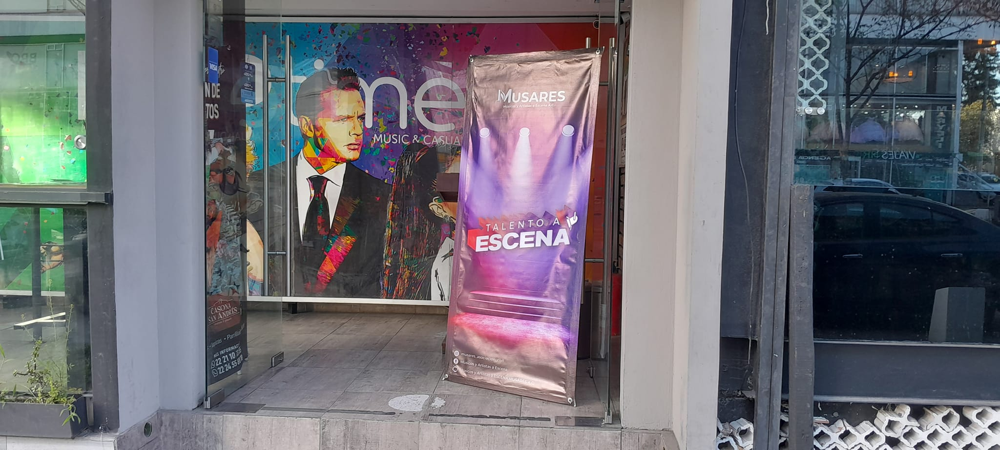
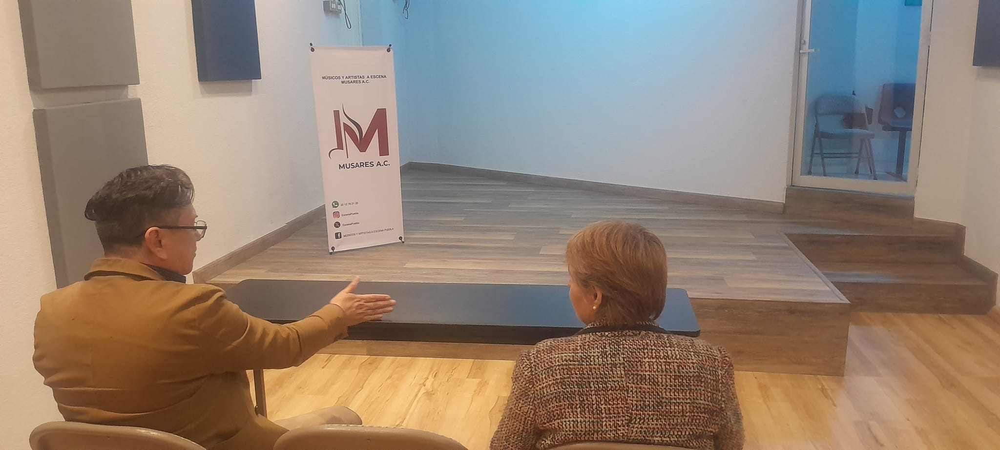
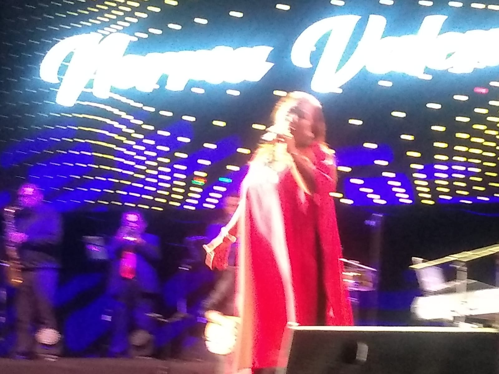

Bienvenidos a Musares
Celebrando el arte y la cultura y procurando el bienestar de los artistas mediante festivales, eventos, talleres y cursos.
¿Quiénes Somos?
Músicos y Artistas a Escena Musares A.C. es una asociación dedicada a promover la cultura, el arte y la música para crear un impacto positivo en la sociedad.
Buscamos ser el puente entre los artistas y las oportunidades que les permitan crecer y prosperar en su carrera artística.
Proyectos
Aquí podrás explorar nuestros proyectos destacados que impactan a la comunidad.
- Comida del Día del Músico
- Talento a Escena
- Acopio de víveres para los damnificados de Acapulco
Galería
Explora momentos destacados de nuestras actividades y eventos.



Contacto
¡Ponte en contacto con nosotros para colaborar o saber más!
WhatsApp: 221 278 2128
Correo Electrónico: musaresacpuebla@gmail.com